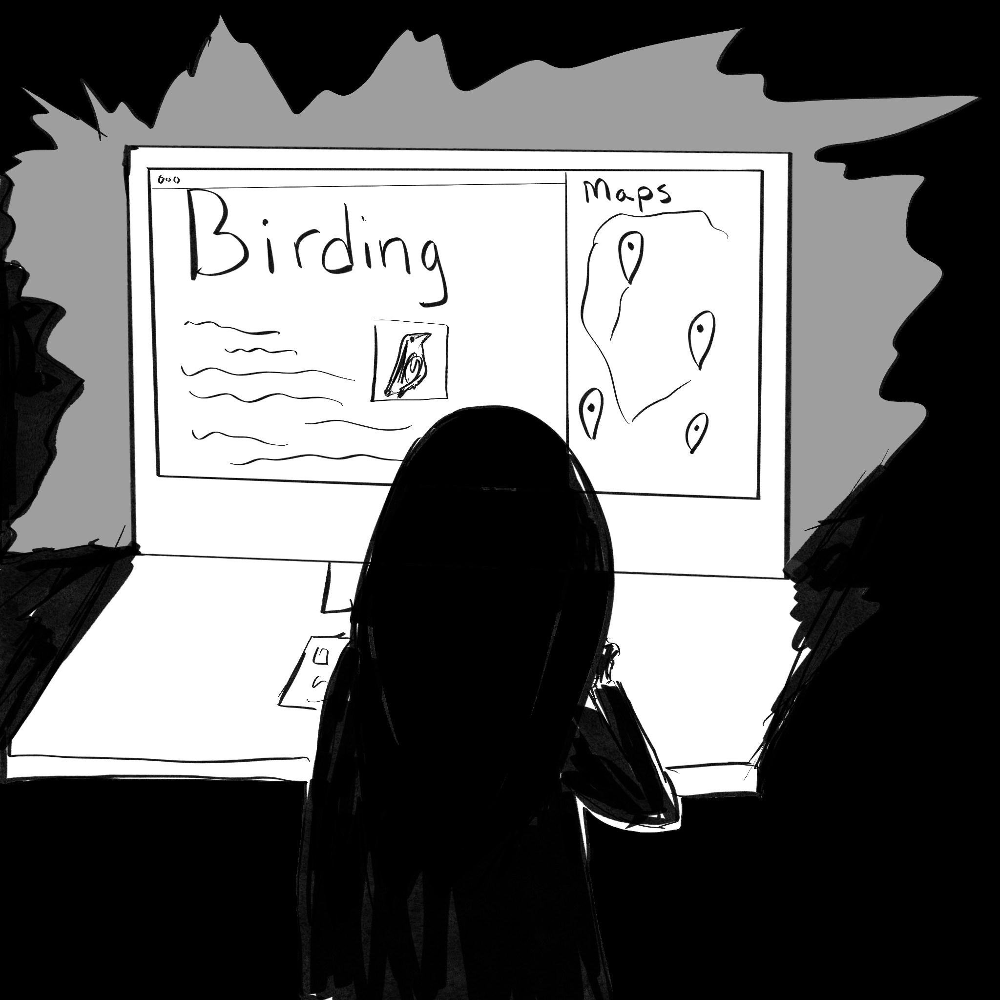

Re-Search

Blue jay sightings... bird call sound apps... times of day... binoculars... blue jays are common here. It's so late...
Blue jay sightings... bird call sound apps... times of day... binoculars... blue jays are common here. It's so late...